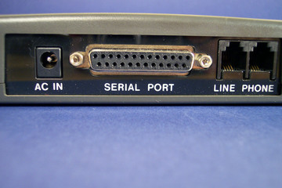

High-Speed Internet Connections
History of High-Speed Internet Connections
Post by Kenneth Eisenhardt, Dec. 18, 2018.
Networks History
The origins of inter-networked computers has its origin in post-World War II United States. Originally beginning as a government project, the first computers directly connected over a network saw speeds of only 50 kilobytes per second (kbps). Little did they know, that in the years to come, we would come to see speeds exponentially faster in both home and backbone applications.

It is import to clarify the difference between network speeds to the internet backbone and for private use. Internet speeds for the backbone, or, the main routing computers, was, and still is, considerably faster than it's private sector counterparts, and for good reason. The backbone needs the fastest speeds possible to serve all of its end-users. The backbone speeds is so much faster and ahead of private sector speeds that in 1986, when the first iteration of the internet backbone came online, it saw speeds of 56kbps. There are still some areas of the country which today which still use dial-up connections and see the exact same speeds. In this article, we will be focusing on, and breaking down, only private sector, or home use connections, as they are the most practical applications. Without further adieu, let's take a look at the history of high-speed internet connections.
Dial-Up Connections
Broadband Connections
Dial-up is a term used to describe internet connections which utilize telephone wires and modem to access the internet. These connections are incredibly slow and are intentionally limited to 56kps so as not to interfere with telephone communications. In 1993, when the World Wide Web was first introduced, Dial-Up connections were the standard for the private sector. While connection speeds have certainly surpassed 56kbps, many rural areas across the United States still only have access to dial-up connections and as such have incredibly slow network speeds. Pictured below is an old dial-up modem.
Broadband connections can be devided into two major categories: Cable and DSL. The major distinction between cable and DSL is that cable has a higher ceiling for max speeds. DSL connections still travel over phone lines but are rated for speeds up to about 3 megabytes per second (Mbps). Cable, on the other hand, is capable of attaining speeds of up to two or three times as fast as DSL. It is important to note that in the modern age, both of these connections are slow and as such are referred to as "the last mile" connections. This refers to the fact that all other cabling used to connect to the internet is currently Fiber Optic, and the "last mile" of cabling used to run from telephone wires to actual buildings still use copper wiring. Below, a traditional copper cable, also know as a Cat5 cable, is being used to provide an internet connection to a router.